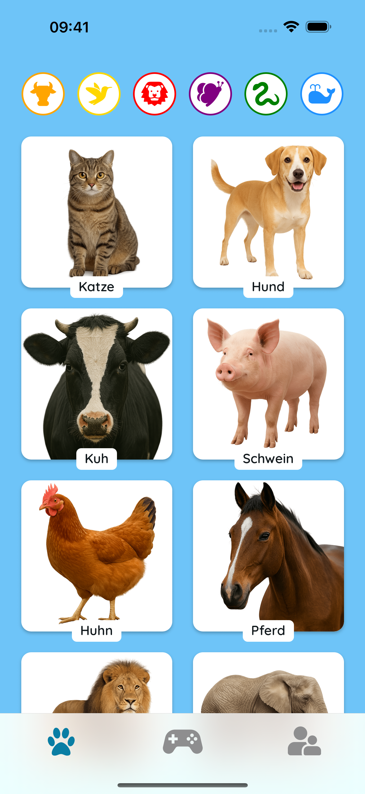
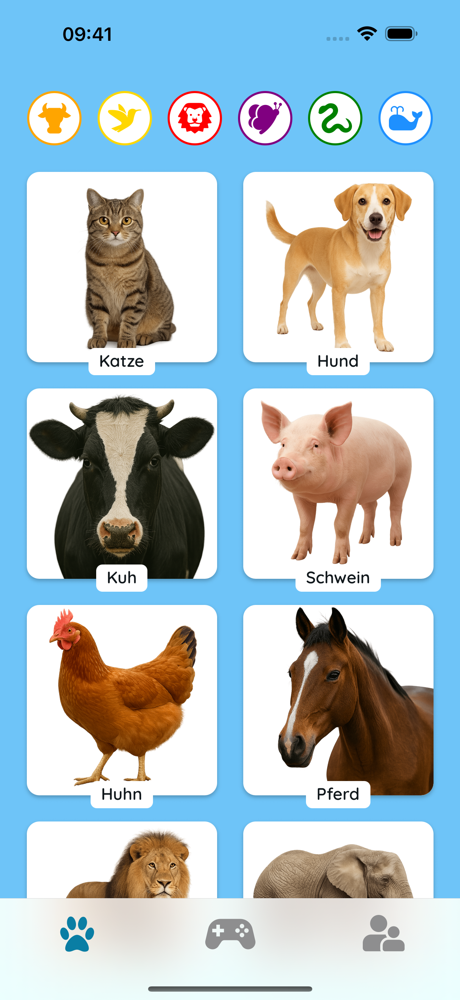
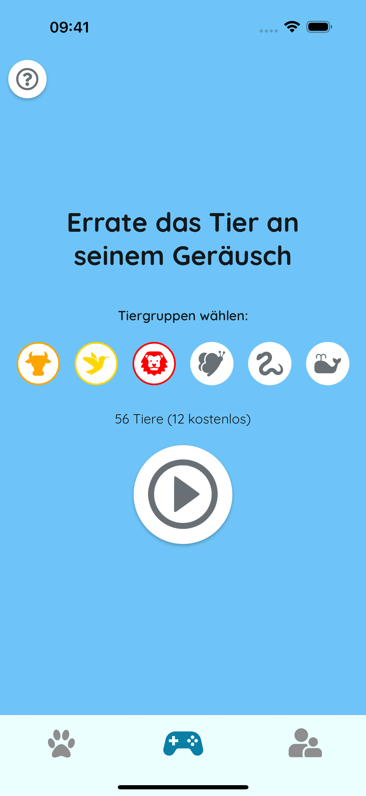
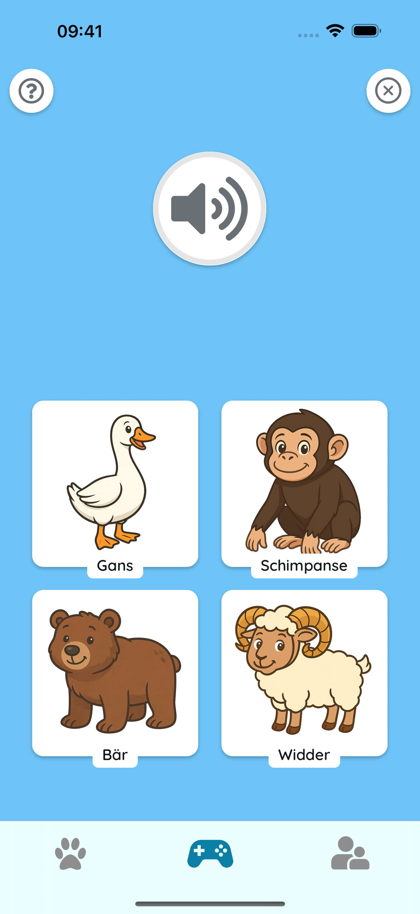

🎵 Lernen durch Zuhören
Tippen Sie auf die Tiere, um echte Geräusche zu hören. Perfekt für frühe Sprache, Gedächtnis und lustige Familienmomente!
 

🧠 Spielen und Raten
Hören Sie genau zu und wählen Sie das richtige Tier! Ein einfacher Quiz-Modus hilft Kindern, Geräusche zu erkennen und sich Tiere leicht zu merken.
 🌍 Sicher und kinderfreundlich
Keine Werbung. Kein Tracking. Nur bunte Tiere, freundliche Geräusche und glückliche Lernzeit zusammen.